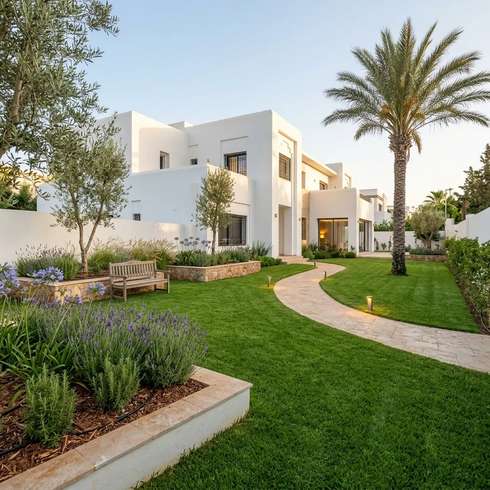
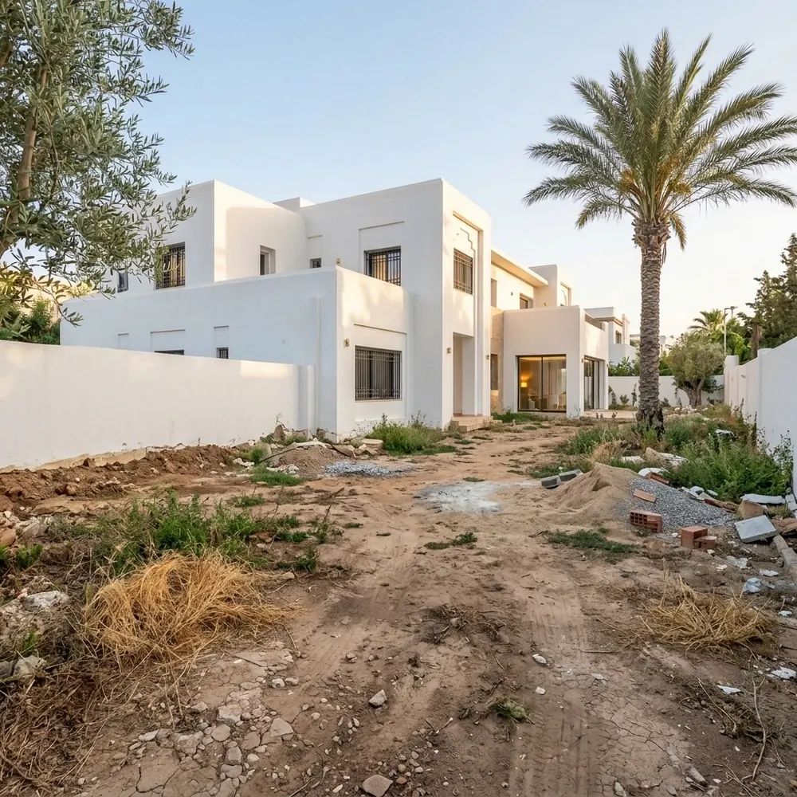
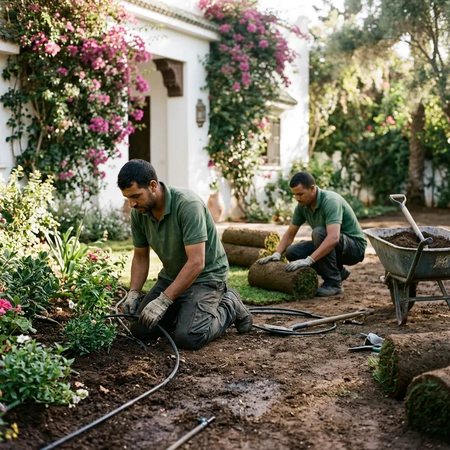
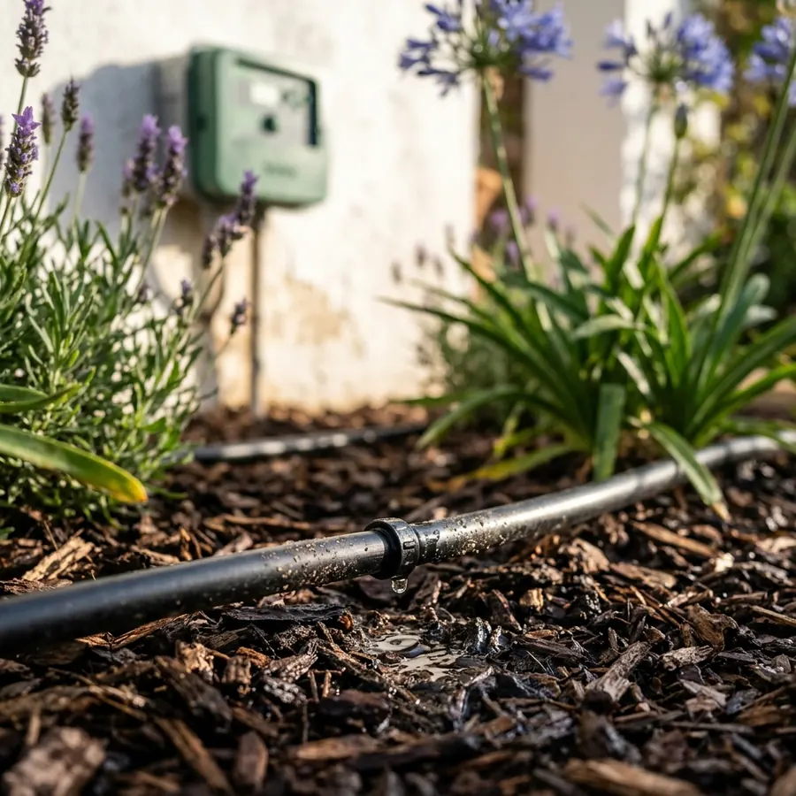
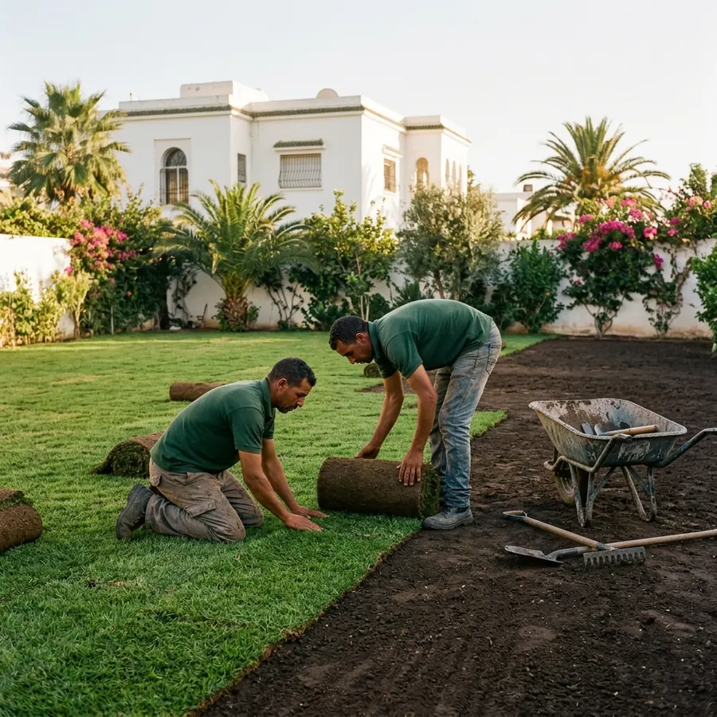
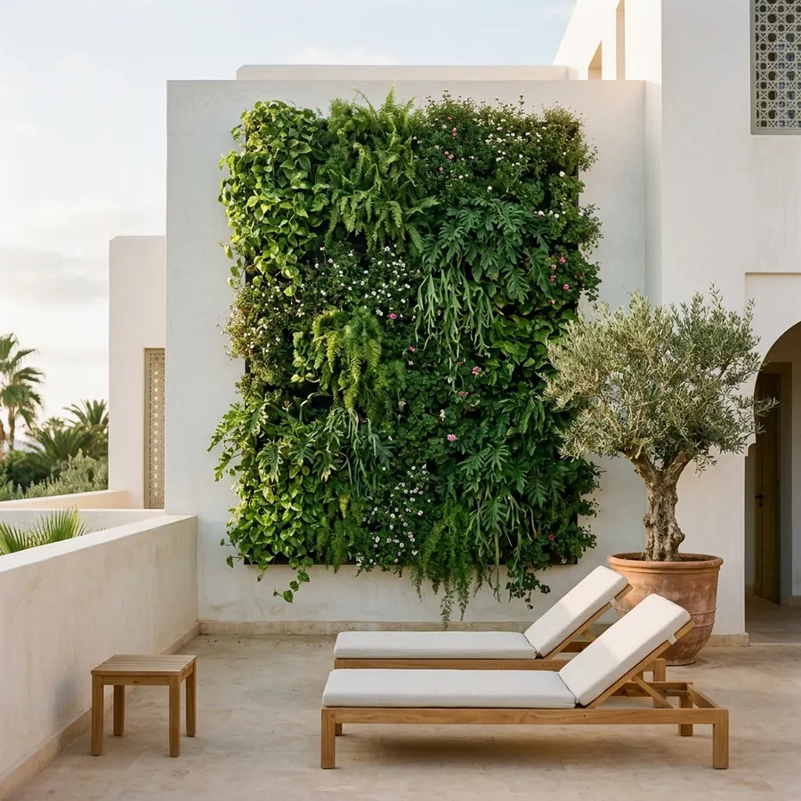
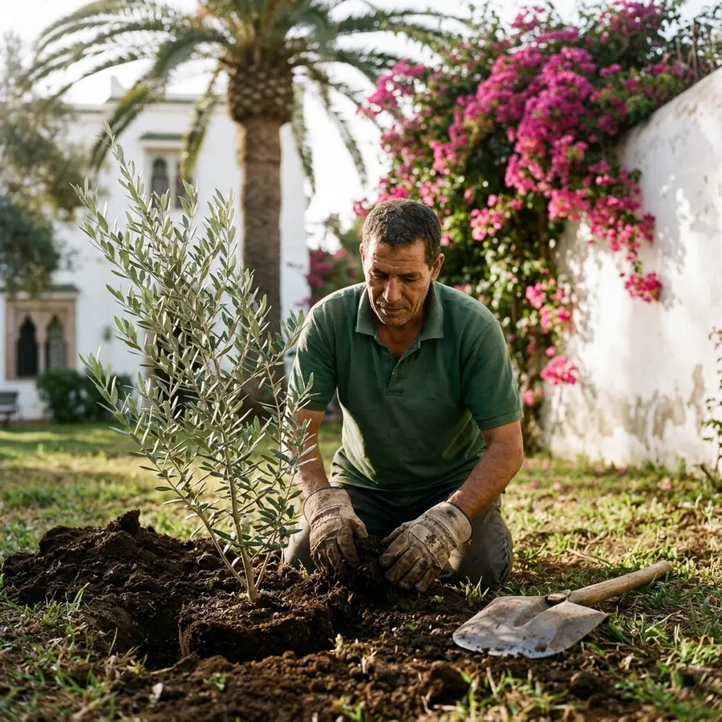

Aménagement de jardin
Conception et création de jardins sur mesure, adaptés au climat marocain et à votre budget.
Estimer mon prix →Création de jardin, gazon, arrosage automatique et entretien mensuel pour villas, résidences, hôtels et entreprises. Estimation en 10 secondes, devis gratuit sous 24 h.
D'un terrain nu à un jardin méditerranéen : gazon, allée en pierre, massifs, oliviers et arrosage goutte-à-goutte.


AVANTAPRÈSVisuel d'illustration d'un projet type.
Choisissez votre projet et la surface : vous obtenez une fourchette de prix, puis un devis exact et gratuit sur WhatsApp.
Fourchette basée sur nos tarifs publics. Le prix final dépend du terrain (sol, pente, accès, végétaux choisis) : devis gratuit et sans engagement.
De la conception à l'entretien, une seule équipe pour tout votre extérieur.
Conception et création de jardins sur mesure, adaptés au climat marocain et à votre budget.
Estimer mon prix →
Tonte, taille, désherbage et traitements, en passage ponctuel ou en contrat mensuel.
Voir les formules →
Goutte-à-goutte et arrosage enterré programmé : jusqu'à 50 % d'eau en moins qu'un arrosage manuel.
En savoir plus →
Pose de gazon en plaques ou semis, préparation du sol et arrosage intégré.
Prix du gazon →
Murs végétaux, toitures et terrasses vertes pour villas, hôtels et bureaux.
Demander un devis →
Oliviers, palmiers, haies et massifs, élagage et soins des arbres.
Demander un devis →Choisissez la fréquence, on s'occupe du reste. Sans engagement de durée.
Tarif selon la surface et l'état du jardin — visite d'estimation gratuite à Rabat, Salé et Témara.
Un message WhatsApp avec 2 ou 3 photos et la surface approximative.
Un prix clair, poste par poste. Visite sur place si nécessaire, gratuite.
Notre équipe réalise le chantier à la date convenue et laisse les lieux propres.
Conseils d'arrosage et contrat d'entretien si vous le souhaitez.
Basée dans le quartier Hassan, EcoFusion Work allie créativité, maîtrise technique et respect de l'environnement pour créer des extérieurs élégants, fonctionnels et durables.
Tarifs indicatifs TTC « à partir de ». Chaque projet fait l'objet d'un devis gratuit.
Votre avis aide d'autres propriétaires de Rabat à trouver un paysagiste de confiance. Cela prend 30 secondes.
Cela dépend de la surface et des choix. À titre indicatif : création de pelouse à partir de 45 MAD/m², arrosage automatique à partir de 120 MAD/m², massif floral à partir de 350 MAD/m², conception complète à partir de 8 000 MAD. Utilisez notre simulateur pour une estimation immédiate ; le devis est gratuit.
Rabat (Hassan, Agdal, Souissi, Hay Riad, Aviation…), Salé, Témara, Harhoura, Skhirat, Bouznika et Kénitra.
Oui : formules mensuelles avec tonte, taille, désherbage, traitements et contrôle de l'arrosage, pour villas, résidences, hôtels et entreprises.
Avec un arrosage goutte-à-goutte ou enterré programmé, du paillage et des plantes adaptées au climat marocain. Nous concevons des jardins sobres en eau.
Sous 24 heures ouvrées. Envoyez-nous des photos de votre espace sur WhatsApp au 07 06 81 36 69 pour un premier chiffrage rapide.
Envoyez 2 photos, recevez votre devis sous 24 h.
Notre équipe vous répond sous 24 heures pour étudier votre projet d'aménagement ou d'entretien.
AdresseImm 7, Rue Moulay Rachid, Hassan
10005 Rabat, Maroc
Téléphone / WhatsApp07 06 81 36 69
HorairesLun – Ven : 9h00 – 18h00
Sam : 9h00 – 12h30 · Dim : fermé